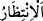

21, 22. (Ey Muhammed!), Sana dâvâcıların haberi ulaştı mı? Hani Mâbedin
duvarına tırmanıp, Dâvûd’un yanına girmişlerdi de Dâvud onlardan korkmuştu.
“Korkma! Biz birbirine hasım iki dâvâcıyız, aramızda adâletle hükmet, haksızlık
etme; bize doğru yolu göster” dediler.
23. (Onlardan biri şöyle dedi:) Bu, kardeşimdir. Onun doksan dokuz koyunu var.
Benimse bir tek koyunum var. Böyle iken “Onu da bana ver” dedi ve tartışmada
beni yendi.
24. Dâvûd: Andolsun ki, senin koyununu kendi koyunlarına katmak istemekle
sana haksızlıkta bulunmuştur. Doğrusu ortakçıların çoğu, birbirlerinin haklarına
tecâvüz ederler. Yalnız îman edip de iyi işler yapanlar müstesnâ. Bunlar da ne
kadar az! dedi. Dâvûd, kendisini denediğimizi sandı ve Rabbinden mağfiret
dileyerek eğilip secdeye kapandı, tevbe edip Allah’a yöneldi.
25. Sonra bu tutumundan dolayı onu bağışladık. Kuşkusuz yanımızda onun yüksek
bir makamı ve güzel bir geleceği vardır.
26. Ey Dâvûd! Biz seni yeryüzünde halife yaptık. O halde insanlar arasında
adâletle hükmet. Hevâ ve hevese uyma, sonra bu seni Allah’ın yolundan saptırır.
Doğrusu Allah’ın yolundan sapanlara, hesap gününü unutmalarına karşılık çetin bir
azap vardır.
“Bunlar da” yâni Mekke kâfirleri de “ancak, bir an gecikmesi olmayan korkunç bir
ses” olan ikinci nefhayı “beklemektedirler.”
Mekke kâfirlerinden ‘bunlar’ diye bahsedilmesi, onları tahkir etmekte ve basit
insanlar olduklarını ifâde etmektedir.
İşte, küfür ve tekzip üzere bulunurlarken helâk edilen mezkûr gruplara benzeyen bu
kâfirler de sadece geri dönüşü olmayan yâni bir çekiş miktarı bile beklemesi
bulunmayan korkunç sesi yâni ikinci nefhayı bekliyorlar. Bu tefsire göre, ibârede var
olduğu farzedilen bir mevsufun (bekleme) sıfatı olan bir muzâf (mikdar) takdir
edilmiştir. Yâni, azapları âhirete ertelendiği için onlarla kendilerine hazırlanan alçaltıcı
cezânın arasına sadece bu ses girebilir. Çünkü Peygamber Efendimiz içlerindeyken,
onlara lâyık olmalarına rağmen, köklerini kurutacak şekilde azâb edilmesi, birtakım
yüce hikmetler üzerine kurulu ilâhî kurallara aykırıdır. Nitekim şu âyet de bunu dile
getirmektedir: “Sen onların içindeyken, Allah onlara azap edecek değildir” (el-Enfâl
8/33).
Âyetteki () “bekleme”, hakîkî anlamda olabileceği gibi alay (istihzâ) maksadlı
bir ifâde de olabilir. Bu bakımdan her ne kadar Mekkeliler, böyle bir sesin gelmesini
beklemiyorlarsa da onun ne kadar yakınında bulunduklarına dikkat çekmek için
bekliyorlarmış gibi anlatılmıştır. Çünkü bir adam, bir şey kendisine oldukça yakın
olduğu zaman her an gözünü o tarafa dikip gözetleyerek o şeyin gelmesini bekler.